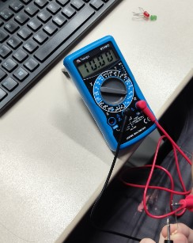

Controle de Iluminação


O multímetro é uma ferramenta extremamente versátil, usada para medir grandezas elétricas como tensão, corrente e resistência, além de testar continuidade em circuitos. Ao utilizar o multímetro corretamente, é possível identificar problemas em circuitos, verificar componentes, e fazer diagnósticos precisos em equipamentos eletrônicos.
